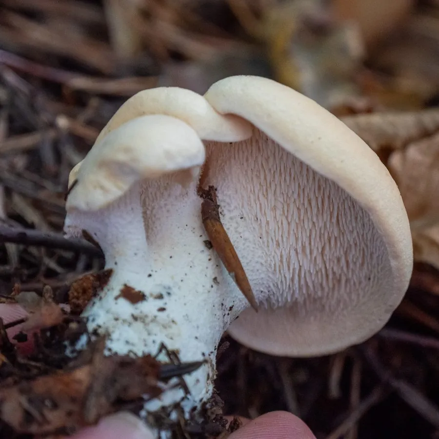

真菌 · 真菌界
卷边齿菌 Hydnum repandum

卷边齿菌的菌盖淡黄色、边缘内卷，菌盖下面长满密集的刺状菌齿而不是菌褶，是味道鲜美的野生食用菌，必须熟食。
- 分类
- 门担子菌门纲伞菌纲目鸡油菌目科齿菌科属齿菌属
- 栖息环境
- 针叶林、阔叶林与混交林的地面，与松、栎、桦等形成菌根
- 地理分布
- 北半球温带广泛分布，中国东北、华北与西南林区有出产
- 保护级别
- 暂无评估（IUCN 未评估，中国未列入重点保护名录）
物种志
卷边齿菌是担子菌门齿菌科的菌根真菌，子实体单生或群生。菌盖呈扁半球形至平展，直径 3–12 cm，表面淡黄色、橙黄色至淡黄褐色，干燥时略呈绒状，边缘明显内卷，因此得名“卷边”；菌肉白色至淡黄色，厚实脆嫩。菌盖下面不是菌褶，而是密集下垂的刺状菌齿，长 3–6 mm，白色至淡黄色，脆而易断。菌柄偏生或中生，粗短，白色至淡黄色；孢子印白色。
卷边齿菌与松、栎、桦等树木形成外生菌根，生于针叶林、阔叶林和混交林的地面，夏秋季出菇，在北半球温带广泛分布，中国东北、华北、西南林区都有出产。它香气独特、肉质脆嫩，是欧洲和北美评价很高的野生食用菌，可炒食、炖汤，但必须充分加热，生食可能引起肠胃不适。菌盖下面的“刺”是它最直观的识别特征，野外见到带刺的蘑菇，多半就是齿菌类。
形态与习性
- 菌盖直径 3–12 cm，淡黄至橙黄色
- 边缘明显内卷，故称“卷边”
- 菌齿密集下垂，长 3–6 mm
- 菌柄偏生或中生，粗短
- 孢子印白色
- 食用性可食，必须充分加热
- 习性与松、栎、桦等形成外生菌根
趣味知识
- 卷边齿菌的菌盖下面长的是刺，不是菌褶，摸起来像小刷子。
- 它的菌盖边缘明显向内卷，名字由此而来。
- 齿菌在欧洲评价很高，肉质脆嫩、香气独特。
- 野生齿菌必须充分加热后再吃，生食可能引起肠胃不适。